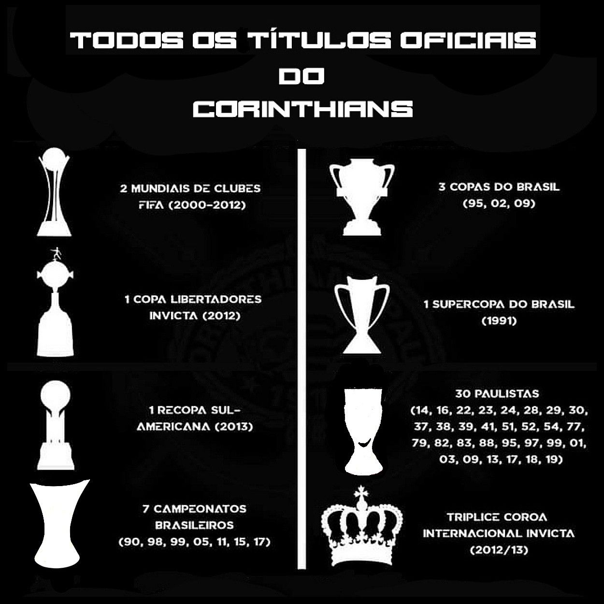
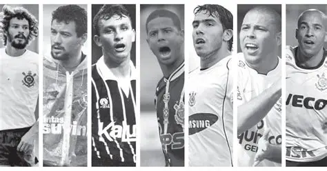

Informações

Estádio
Arena Corinthians, localizada em Itaquera, São Paulo.

Títulos
Brasileirão, Copa do Brasil, Libertadores, Mundial de Clubes e mais.

Ídolos
Sócrates, Marcelinho Carioca, Rivelino, Cássio, entre outros.